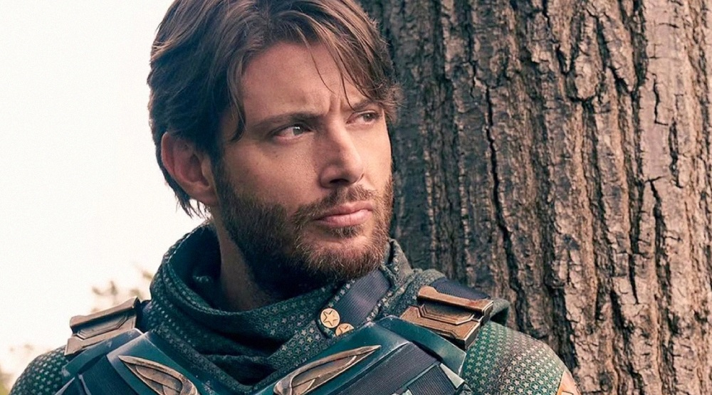

Дженсен Эклс

Биография
Дженсен Эклс родился 1 марта 1978 года в Далласе (штат Техас, США) в семье актёра Алана Роджера Эклса и Донны Джоан Шеффер. Родители назвали сына Дженсеном, так как считали это имя редким[4]. У Дженсена есть старший брат Джошуа (род. 1975) и младшая сестра Маккензи (род. 1985)[5]. Имеет ирландские, английские и шотландские корни[6].
В 1990 году Дженсен Эклс окончил начальную школу Дартмут в Ричардсоне (Техас), затем он перешёл в среднюю школу Аполло, которую окончил в 1993 году, а закончил он среднее образование в школе Беркнера в 1996 году. После окончания школы Дженсен собирался поступать в Техасский университет на физиотерапевта, но потом решил стать актёром и переехал в Лос-Анджелес[6].
Сверхъестественное
Сериал «Сверхъевственное» рассказывает о приключениях братьев Сэма и Дина и Винчестеров, которые продолжают дело своего отца – охотятся на сверхъестественных тварей, которые убивают обычных людей. Им на пути попадаются буйные призраки, кровожадные вампиры, хитрые джины, демоны, оборотни и другие существа, о существовании которых большинство людей даже не подозревает.
Пацаны
Первый сезон американского супергеройского телесериала «Пацаны», который является первым сериалом франшизы, основанной на одноимённой серии комиксов, написанных Гартом Эннисом и Дэриком Робертсоном. Сериал был разработан для телевидения американским сценаристом и телепродюсером Эриком Крипке и спродюсирован Sony Pictures Television совместно с Point Grey Pictures, Original Film, Kripke Enterprises, Kickstart Entertainment и KFL Nightsky Productions.
В первом сезоне сериала снимались Карл Урбан, Джек Куэйд, Энтони Старр, Эрин Мориарти, Доминик Макэллиготт, Джесси Т. Ашер, Лаз Алонсо, Чейс Кроуфорд, Томер Капон, Карен Фукухара, Натан Митчелл и Элизабет Шу. История разворачивается во вселенной, где большинство наделённых сверхспособностями людей признаны супергероями, но на самом деле злоупотребляют своими способностями в личных целях, информация, о которой общественность не знает. Сериал рассказывает об одноимённых Пацанах (во главе с Билли Бутчером), группе линчевателей, стремящихся свергнуть Vought International и разоблачить её коррумпированных супергероев. Когда девушка Хьюи Кэмпбелла случайно погибает рук Экспресса, он присоединяется к Пацанам, чтобы отомстить «Семёрке». Тем временем Энни Дженьюари вынуждена посмотреть правде в глаза о тех, кем она восхищается, после того, как она присоединяется к «Семёрке», возглавляемой Хоумлендером. Пацаны пытаются помешать Vought получать государственную поддержку для супергероев, раскрывая секреты компании. Когда Хьюи и Энни начинают романтические отношения, конфликт запутывается, несмотря на то, что они изначально не знали о связях друг с другом.
Ссылки